◎
Centralização
Reunir documentos e informações de pagamento em um painel próprio, reduzindo a dispersão dos controles.
O PlayFlow é uma aplicação web desenvolvida para centralizar documentos de pagamento, consultar informações provenientes do Fluig e apoiar o acompanhamento do processamento pelo setor de Contas a Pagar.
Acompanhamento por situação
O processo de contas a pagar envolve informações registradas no Fluig e atividades de conferência e lançamento no Siagri. A repetição de registros e o uso de controles paralelos podem gerar retrabalho, atrasos e inconsistências.
Reunir documentos e informações de pagamento em um painel próprio, reduzindo a dispersão dos controles.
Consultar periodicamente pagamentos confirmados no ambiente Fluig/Oracle e importar os dados para a base do PlayFlow.
Organizar os documentos por situação e apoiar a consulta do histórico e das movimentações do processo.
As telas e documentos disponibilizados registram as seguintes áreas e recursos do PlayFlow.
Acesso ao sistema por tela de login e controle de usuários autorizados.
Visualização dos documentos de pagamento organizados por situação.
Consulta de registros e movimentações para acompanhar o processamento.
Operações de consulta e gerenciamento de documentos, com console interno para apoiar requisições e visualizar respostas.
Gerenciamento de usuários e perfis de acesso, com área de permissões restrita a administradores.
Processo automatizado iniciado por Scheduler para consultar pagamentos confirmados no Fluig.
A solução separa a interface, as regras de negócio, a persistência e a comunicação com os sistemas de origem.
Interface acessada pelo navegador, com páginas para login, painel, histórico e administração.
Java e Spring Boot organizam regras de negócio, autenticação, serviços e disponibilização da API REST.
PostgreSQL armazena os dados próprios do PlayFlow. Oracle é consultado como fonte de informações relacionadas ao Fluig.
Cadastro, definição de perfil, autenticação e recuperação de senha conforme a especificação.
Acompanhar documentos, consultar dados de origem e tratar resultados e situações do processo. O envio ao ERP permanece condicionado à implementação.
Consultar os documentos de pagamento e acompanhar sua situação no painel.
Localizar documentos conforme a unidade organizacional associada.
Executar a consulta periódica dos pagamentos confirmados no Fluig.
Consultar registros e movimentações associados aos documentos.
Cronograma consolidado a partir do planejamento do projeto e das atividades registradas no Classroom, com os respectivos prazos e situações de entrega.
| Fase | Atividade / Entrega | Data registrada | Situação |
|---|---|---|---|
| 1 — Elaboração e início | Cronograma do projeto | 09/05/2026 | Concluído |
| 1 — Elaboração e início | Pedidos dos investidores | 13/05/2026 | Concluído |
| 1 — Elaboração e início | Especificação suplementar | 14/05/2026 | Concluído |
| 1 — Elaboração e início | Documento de visão | 19/05/2026 | Concluído |
| 2 — Definição e plano | Protótipo (telas) | 25/05/2026 e 26/05/2026 | Concluído |
| 2 — Definição e plano | Diagrama de casos de uso | 03/06/2026 | Concluído |
| 2 — Definição e plano | Workflow (AS-IS) | 07/06/2026 | Concluído |
| 2 — Definição e plano | Glossário | 09/05/2026 | Concluído |
| 2 — Definição e plano | Plano de estágio completo | 16/06/2026 | Concluído |
| 3 — Lançamento e execução | CRUD funcional | 21/06/2026 | Concluído |
| 2 — Definição e plano | Especificação de Caso de Uso | 10/10/2026 | Concluído |
| 2 — Definição e plano | Diagrama de Entidade e Relacionamento (DER) | 17/10/2026 | Concluído |
| 2 — Definição e plano | Diagrama de Classes | 17/10/2026 | Concluído |
| 2 — Definição e plano | Diagrama de Sequência | 24/10/2026 | Concluído |
| 2 — Definição e plano | Diagrama de Estados | 24/10/2026 | Concluído |
| 3 — Lançamento e execução | Diagrama de Implantação | 31/10/2026 | Concluído |
| 3 — Lançamento e execução | Relatório de Estágio | 31/10/2026 | Concluído |
| 5 — Fechamento do projeto | Documentos da banca de estágio | 09/11/2026 | Concluído |
| 5 — Fechamento do projeto | Atestado de Qualificação | 09/11/2026 | Concluído |
Situação geral: todas as atividades listadas no cronograma foram concluídas e entregues. As datas foram mantidas conforme o planejamento original e os prazos exibidos no Classroom.
Diagramas e documentos de apoio reunidos para consulta. Clique para abrir os arquivos.
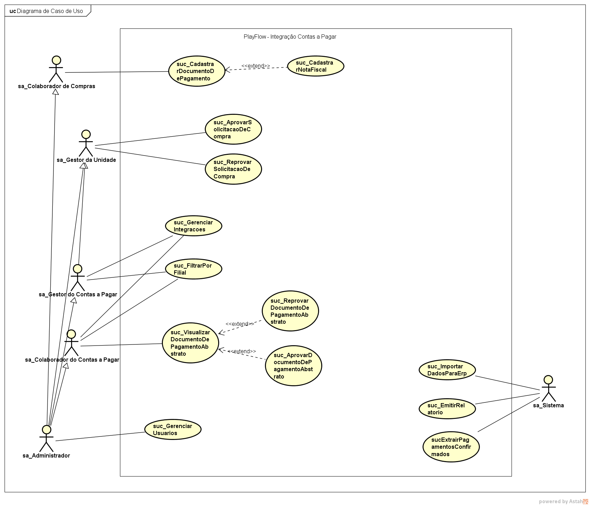
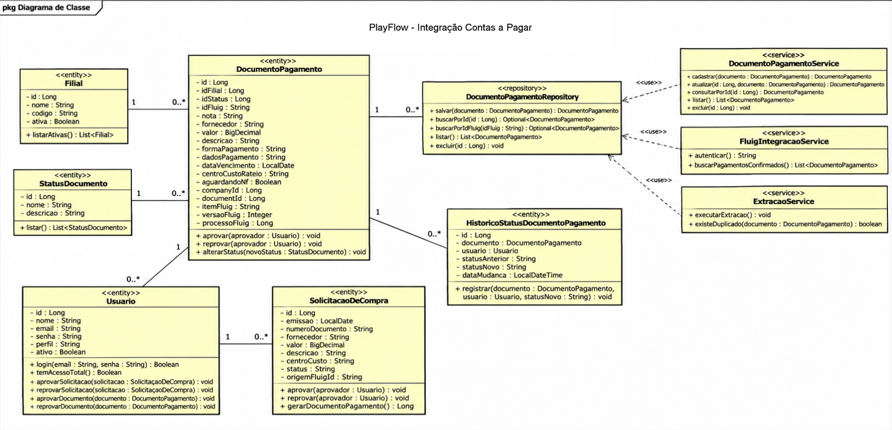
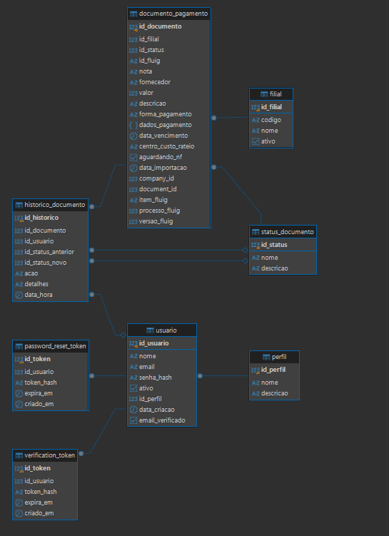
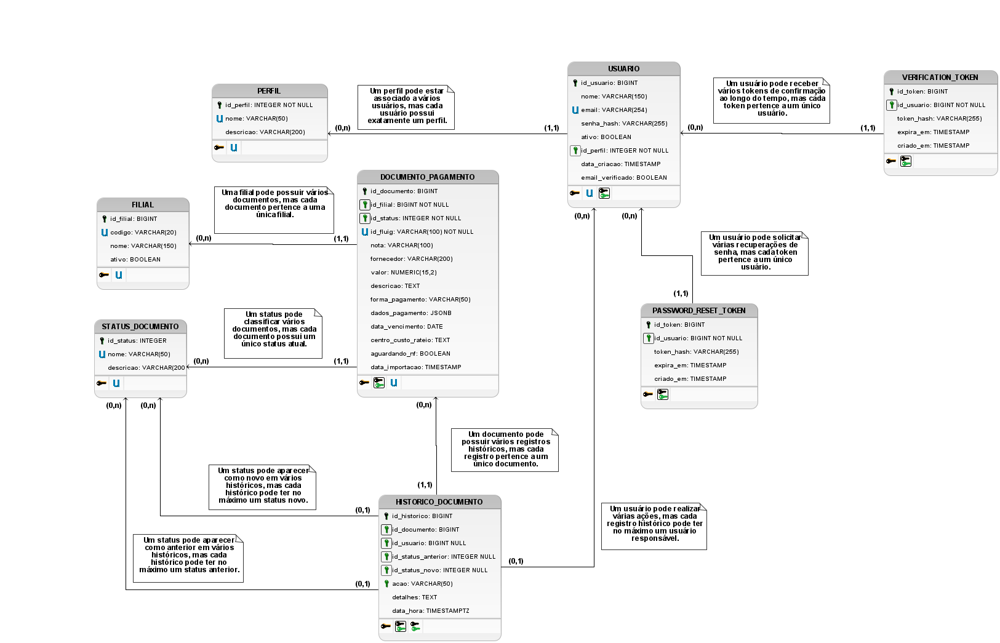
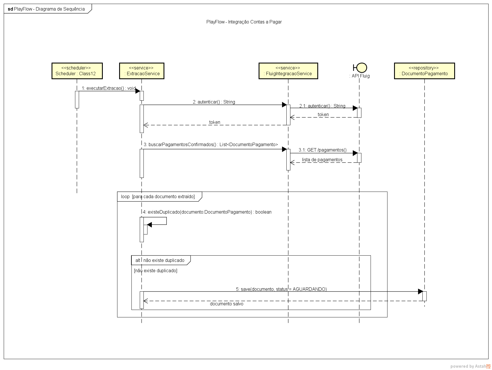
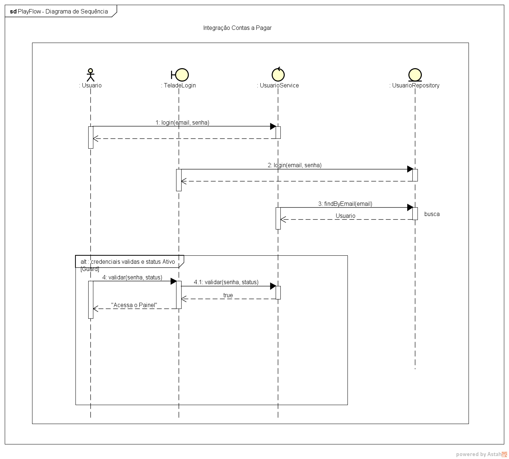
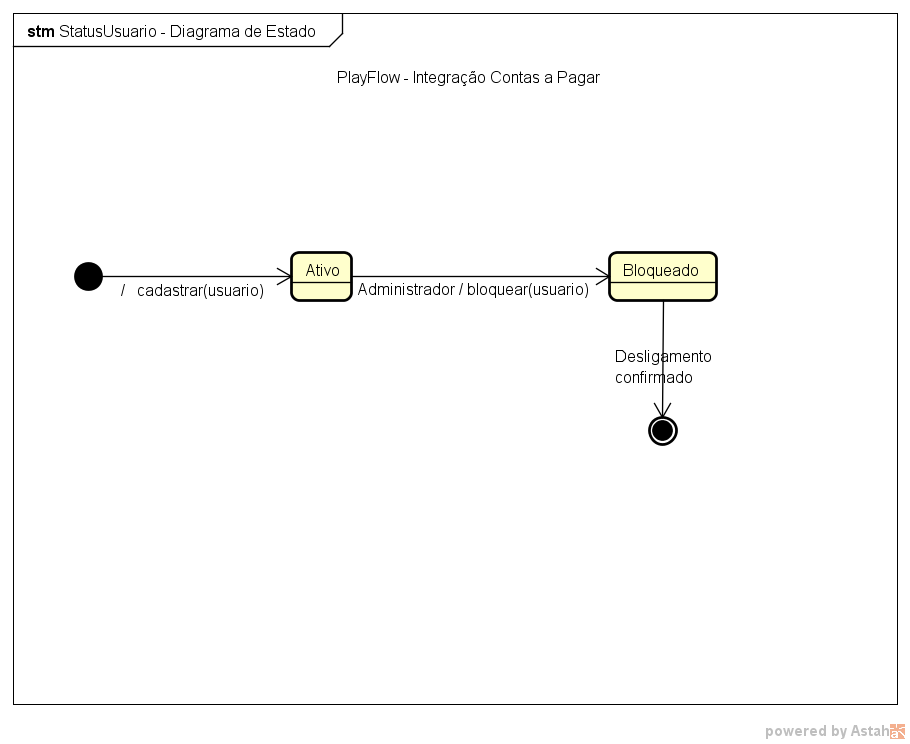
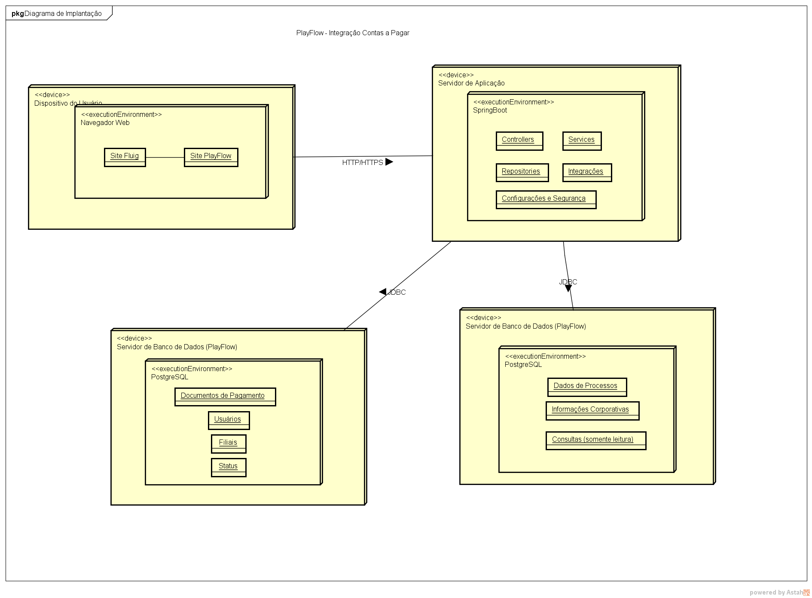
Capturas de tela e vídeo demonstrativo das funcionalidades documentadas e implementadas no sistema.
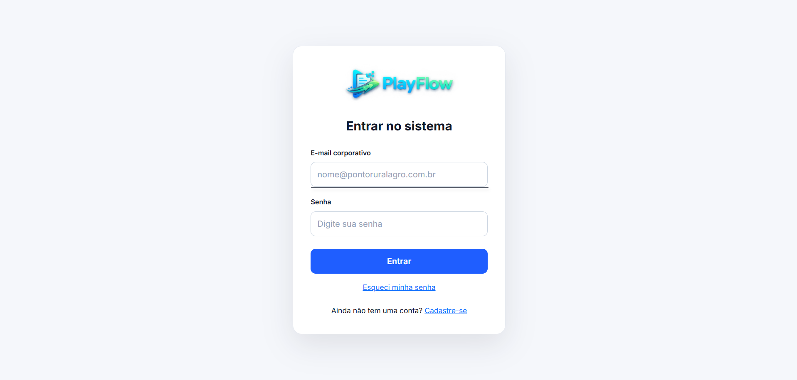
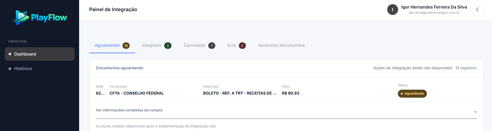
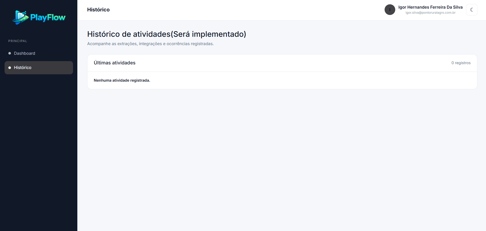
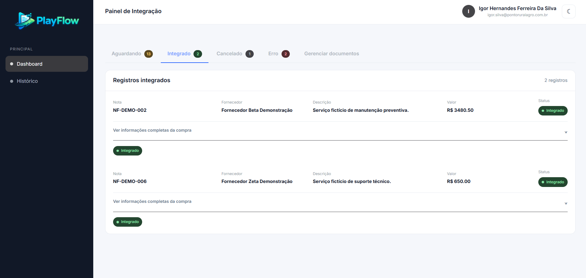
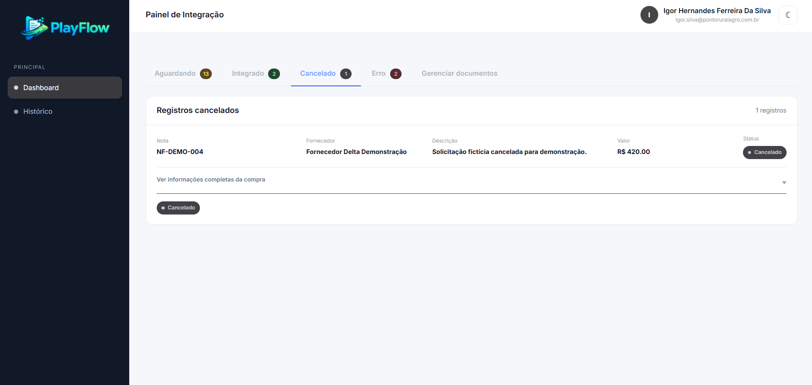
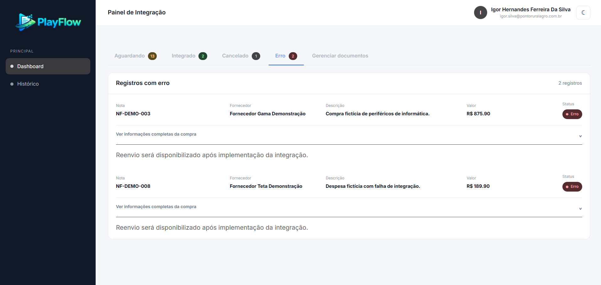
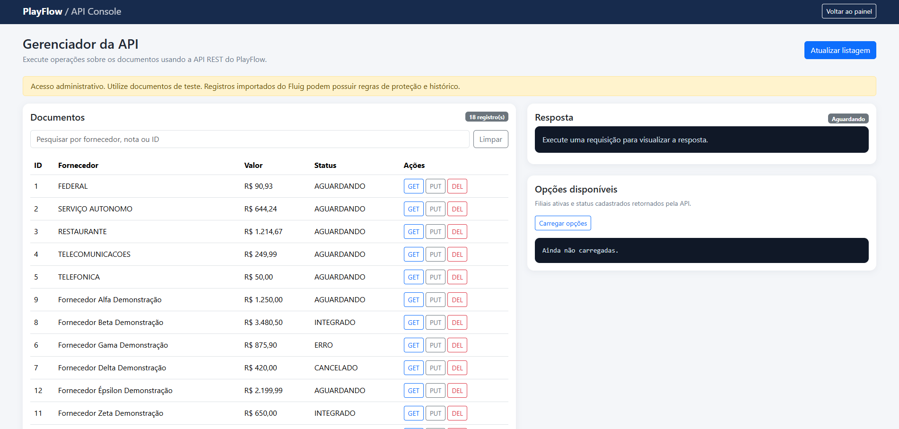
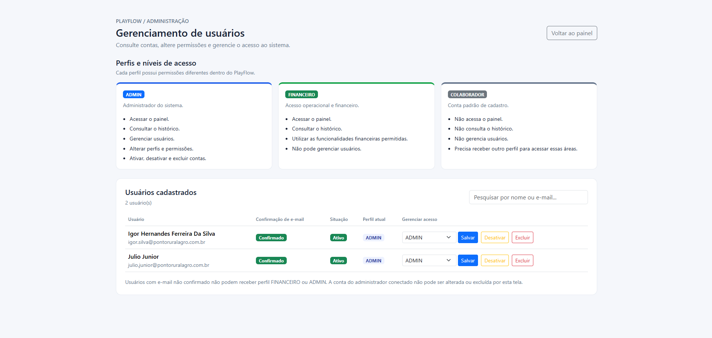
Vídeo demonstrativo das principais funcionalidades e do funcionamento do sistema PlayFlow.
Informações acadêmicas e orientação.
Bacharelado em Engenharia de Software · UniFil
Professor orientador: Marcos Leandro Nascimento
Matrícula: 242072003